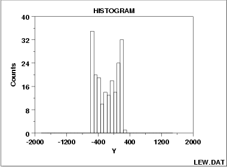

|
1. Exploratory Data Analysis 1.3. EDA Techniques 1.3.3. Graphical Techniques: Alphabetic 1.3.3.10. Histogram 1.3.3.10.4. Histogram Interpretation: Symmetric and Bimodal |
|
|
 |
|
|
The "mode" of a distribution is that value of
the variable which is "most frequent", that is, has the
largest probability of occurrence.
At the population level,
the population mode is the value of the variable
corresponding to the peak of the probability density
function.
At the data level,
the sample mode is the value of the data
corresponding to the peak of the histogram.
The sample mode is, of course, an estimator of the population
mode.
For many phenomena, it is quite common for the distribution of the response values to be unimodel, that is, the data values tend to cluster around a single mode and then distribute themselves with lesser frequency out into the tails. The commonly-encountered bell-shaped normal 9= Gaussian) distribution is the classic example of a unimodal distribution. The histogram shown above illustrates data from a bimodal (= 2 peak) distribution. If non-unimodality exists, it is important that the analyst be aware of it. As with many of the EDA techniques, the histogram serves as a nice diagnostic tool for increasing such awareness. Questioning as to why such distributional non-unimodality exists frequently leads to greater insight and improved deterministic modeling of the phenomenon under study. (For example, for the data presented above, the bimodal histogram was caused by a deterministic sinusoidality in the data).
Recommended Next Steps |
|